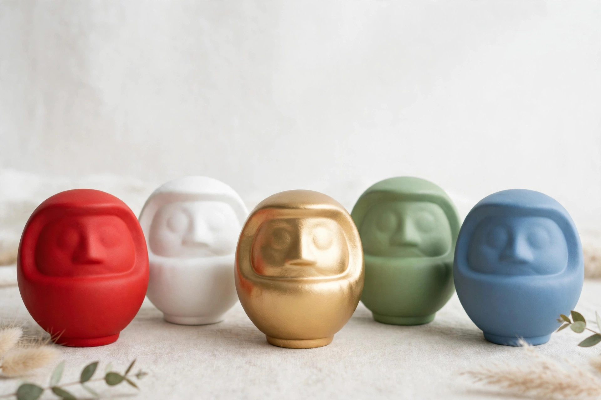

だるまの色には意味がある ― 願いごとに合う色の選び方

だるまといえば赤、という印象をお持ちの方は多いはずです。けれど店頭や贈り物の場面では、白や黒、金色のだるまも並びます。実はだるまの色にはそれぞれ意味が込められており、願いごとに合わせて色を選ぶ楽しみがあります。この記事では代表的な色の意味と、願いごと別の選び方をご紹介します。
色ごとの意味を知る
赤 ― 魔除けと必勝
もっとも定番の色です。古くから魔除けの色とされ、勝負事への必勝や家内安全、開運全般を願うときに選ばれます。迷ったら赤、という王道の色です。
白 ― 純粋さと目標達成
清らかさを表す白は、合格祈願や目標達成の願いと結びつけられることが多い色です。新しく物事を始める節目にもよく選ばれます。
黒 ― 商売繁盛と厄除け
どっしりと重みのある黒は、商売繁盛や金運を願う色として知られ、厄除けの意味も持つとされます。店舗の開店祝いにも向いています。
金・黄 ― 金運と豊かさ
金色は豊かさや金運アップ、黄は明るさや幸福を象徴する色として人気です。景気づけの贈り物としても喜ばれます。
青・緑・ピンク ― 健康や安らぎ、恋愛
青は仕事運や冷静さ、緑は健康や安全、ピンクは恋愛成就や良縁と結びつけられることが多い色です。贈る相手の願いに寄せて選ぶと気持ちが伝わります。
願いごと別のおすすめ
- 受験・資格試験：白（目標達成）または赤（必勝）
- 商売・開業：黒や金（商売繁盛・金運）、定番の赤も
- 健康・病気平癒：緑、または魔除けの赤
- 恋愛・良縁：ピンク
- 仕事・昇進：青、または赤
- 交通安全・家内安全：緑や赤
色の意味づけは、地域や製造元によって少しずつ異なる場合があります。厳密な決まりというより、昔から親しまれてきた目安として捉えていただければ十分です。
迷ったときの考え方
意味で迷ったときは、まず「贈る相手や自分が、毎日見て元気になれる色かどうか」を基準にしてみてください。だるまは願いが叶うまで目に入る場所に置くものです。意味も大切ですが、見ていて前向きな気持ちになれる色こそ、長く寄り添ってくれる一色になります。もちろん、まずは定番の赤から始めるのも立派な選び方です。
※色の意味は一般的に知られる目安です。地域の風習や製造元により多少異なります。